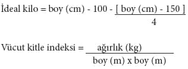

Şişmanlık Vücudumuzda Aşırı Yağ Birikmesidir
Obezite, yani şişmanlık vücudumuzdaki yağ miktarının artmasıdır. Ağırlığı fazla olan kişilerin hepsi obez olarak kabul edilmez. Bazı kişilerde kas gelişimi fazlaysa bu da ağırlığı artırır. Bu nedenle fazla kiloluluk veya şişmanlık ile ağırlık aynı anlama gelmemektedir. Dünya Sağlık Örgütü (WHO), obeziteyi “vücutta sağlığı bozacak ölçüde anormal veya aşırı miktarda yağ birikmesi” olarak tanımlamıştır. 18 yaşındaki erkeklerde vücut ağırlığının yüzde 15-18’ini, kızlarda ise yüzde 20-25’ini yağ oluşturur. Erkeklerde bu oran yüzde 25’i, kadınlarda ise yüzde 30-35’i aşarsa fazla kiloluluk ortaya çıkar.
Fazla kiloların oluşumunda anne ve babamızdan aldığımız genetik yapı, yaktığımızdan fazla gıda almak, hormon bozukluğu ve hareketsizlik önemli rol oynar.
Şişmanlık Tipleri Nelerdir?
Şişmanlık, vücuttaki yağın dağılımına göre iki tipte olabilir:
Erkek tipi (elma tipi) şişmanlık: Bu tip şişmanlıkta karında, göbekte, iç organların etrafında fazla miktarda yağ vardır. Elma tipi, karın tipi, erkek tipi (android), kayış veya kemer üstü şişmanlık isimleri de verilir. Şeker hastalığı, tansiyon, kan yağlarında yükseklik, karaciğer yağlanması, koroner arter ve beyin damar hastalıkları (inme-felç) bu fazla kiloluluk tipinde sık görülür. Bu nedenle göbekte yağ toplanması ile karakterize edilen şişmanlık sağlık açısından çok zararlıdır.
Kadın tipi (armut tipi) şişmanlık: Bu tip şişmanlıkta yağlar cilt altında ve kalçada birikmiştir. Cilt altı, kadın tipi (jineoid), kemer altı, armut tipi şişmanlık da denir. Kadınlarda yağların basende veya kalçada birikmesi bu tür şişmanlığı oluşturur. Bu tip şişmanlarda kalp ve damar hastalığı veya şeker hastalığı daha az görülür.
Bel Çevrenizi Ölçünüz
Fazla kilolu bir kişide kalp hastalığına yakalanma riski, bel çevresi ve vücut kitle indeksi (VKİ)’ne göre hesaplanır. Bel çevresi genişledikçe kalp hastalığına yakalanma riski artar. Bel çevresi erkekte 102 cm’den kadında 88 cm’den fazla ise, kalp hastalığına yakalanma riski yüksek demektir. Bel çevresi ne olursa olsun, VKİ 35 kg/m2’den fazla ise kalp hastalığı riski yine yüksektir.
İdeal Kilo
Bir kişinin fazla kilolu olup olmadığı aşağıdaki ölçütlere göre belirlenir:
• Ağırlığın ideal kilonun yüzde 120’sinden fazla olması
• Vücut kitle indeksinin 30 kg/ m2’den fazla olması
İdeal kilo ve vücut kitle indeksi aşağıdaki şekilde hesaplanır:

Vücut kitle indeksi, obeziteyi saptamak için en sık kullanılan ölçümdür. Vücut kitle indeksi vücut yağını kaba bir hesapla tahmin etmeye yarar ve vücut yağını yüzde 70 doğrulukta ortaya koyar.
Vücut kitle indeksi (VKİ) 24.9 kg/m2’den küçük ise o kişiye sağlıklı, 25-29.9 kg/m2 arasında ise aşırı kilolu, 30-34.9 kg/m2 ise hafif fazla kilolu (EVRE I ŞİŞMANLIK), 35-39.9 kg/m2 arasında ise şiddetli fazla kilolu (EVRE II ŞİŞMANLIK), 40 ve üstü ise çok şiddetli (morbid) obez veya ölümcül obez (EVRE III ŞİŞMANLIK) diyoruz. VKİ 18.5 kg/m2’den az ise kilo azlığı söz konusudur.
Bu sınırlar obezitenin tanımı için uygun olsa da VKİ’si 19 olan bir kişinin sözgelimi VKİ’si 24.5’a kadar kilo alması da bir risk taşır.